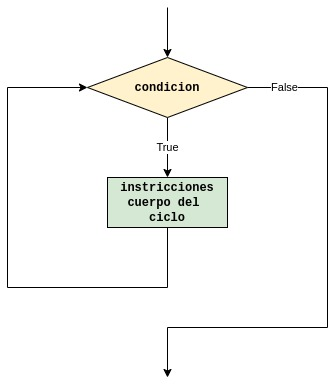

pip install metakernel
from metakernel import register_ipython_magics
register_ipython_magics()
# Run and print a shell command.
def run(cmd):
print('>> {}'.format(cmd))
!{cmd} # This is magic to run 'cmd' in the shell.
print('')
def compile(nombre_clase):
run('javac {}.java'.format(nombre_clase))
def execute(nombre_clase):
run('java {}'.format(nombre_clase))
def ejecutar(nombre_clase):
compile(nombre_clase)
execute(nombre_clase)
# Ejecutar esto solo si lo está usando online o en linux
# Update and upgrade the system before installing anything else.
run('apt-get update > /dev/null')
run('apt-get upgrade > /dev/null')
# Install the Java JDK.
run('apt-get install default-jdk > /dev/null')
# Check the Java version to see if everything is working well.
run('javac -version')
Estructuras repetitivas¶
Contextualización¶
Suponga que le solucitan un programa que obtenga la suma de los primeros 10 numeros y que imprima su resultado. La solución para este caso será:
%%tutor
# código en python
CANTIDAD_NUMEROS = 10
sum = 0 + 1 + 2 + 3 + 4 + 5 + 6 + 7 + 8 + 9 # sum = 45
print("La suma de los primeros " + str(CANTIDAD_NUMEROS) + " numeros es: " + str(sum))
%%writefile Ejemplo1.java
/*
Código en java
*/
public class Ejemplo1{
public static void main(String[] args){
final int CANTIDAD_NUMEROS = 10;
int sum = 1 + 2 + 3 + 4 + 5 + 6 + 7 + 8 + 9; // sum=45
System.out.println("La suma de los primeros " + CANTIDAD_NUMEROS + " numeros es: " + sum);
}
}
ejecutar('Ejemplo1')
Ahora supongamos que nos piden que calculemos e impromamos el suma de los 1000 primeros numeros. Si hacemos uso de lo que hemos visto hasta el momento, la implementación del algoritmo sería sumamente engorrosa. Veamos la implementación propuesta (en python):
CANTIDAD_NUMEROS = 1000
sum = 0 + 1 + 2 + 3 + 4 + ... + 997 + 998 + 999 # sum = ?
print("La suma de los primeros " + str(cantidad_numeros) + " numeros es: " + str(sum))
De la solución anterior, vemos que la implementación anterior no es practica y por lo tanto no es viable. Sin embargo, afortunamente existe una forma de tratar problemas como este y es mediante las estructuras repetitivas las cuales trataremos a continuación.
Definición¶
Una estructura repetitiva o ciclo es una estructura que permite solucionar problemas que requieran que se repitan un concunto de instrucciones un determinado numero de veces. El diagrama de flujo tipico de un ciclo se muestra a continuación:

Como se puede observar en la figura anterior, un ciclo esta compuesto de dos partes principales:
La condición: Esta es la expresión logica que se evalua antes entrar al ciclo. Si el resultado de la evaluación da True (V) se ingresa al cuerpo del ciclo y se ejecutan las instrucciones que alli se encuentran. En caso contrario, cuando la evaluación de la instrucción es False (F), entonces no se ingresa al cuerpo del ciclo continuandose por lo tanto, con la siguiente instruccion fuera del ciclo.
Cuerpo: Conjunto de instrucciones que se ejecutan cuando se ingresa al ciclo (cuando la condición da verdadera (True)). Como se puede ver en la figura, una vez se ejecutan todas al instrucciones que estan en el cuerpo del ciclo, se retorna nuevamente a la condición para proceder a determinar si se ingresara de nuevo al cuerpo de ciclo o se culminará su ejecución.
En el caso de java, existen dos tipos de ciclo:
El ciclo while.
El ciclo do-while
El ciclo for.
Ciclo while¶
Este ciclo tiene la siguiente sintaxis:
# sintaxis en python
while (condicion):
# Cuerpo del ciclo
instruccion_1
instruccion_2
...
instruccion_N
// sintaxis en java
while (condicion){
// Cuerpo del ciclo
instruccion_1;
instruccion_2;
...
instruccion_N;
}
Como todo ciclo, inicialmente lo primero que se hace es evaluar la condición para determinar si se ingresa (condición verdadera) o no al ciclo (condición falsa).
Sobre la condición de control¶
Como se dijo previamente, el resultado obtenido al evaluar la condición determina si se ingresa al ciclo o no. El objetivo es que el ciclo solo se repita un numero determinado de veces de modo que debe haber un momento en que esta condición debe hacerse falsa para que el programa se salga del ciclo sino, lo que se trenda será un ciclo infinito.
Para hacer que una condición se haga falsa se emplea una variable especial conocida como variable de control del ciclo. Esta variable es la que se evalua en la condición con el fin de determinar si se ingresa o no al ciclo por lo tanto se debe modificar dentro del cuerpo para evitar la condicion de ciclo infinito. Para entender esto, analicemos nuevamente el ejemplo de sumar los mil primeros numeros empleando el ciclo.
Ejemplo: Hacer un programa que sume los 1000 primeros numeros y los muestre en pantalla.
Analisis del problema:
Entradas:
No hay
Salidas:
sum: suma de los 1000 primeros numeros.
Variables auxiliares:
i: i-esimo numero (variable de control del ciclo)
Constantes:
CANTIDAD_NUMEROS = 1000: Cantidad de numeros que se van a sumar. Proceso
Declarar constantes
Inicializar variables:
i = 0,sum = 0Calcular la suma (ciclo).
Desplegar el resultado de la suma.
Codigo python:
# %%tutor
# Constantes
CANTIDAD_NUMEROS = 1000
# Inicializacion de variables
i = 0 # Variable de control del ciclo
sum = 0
# Calculo de la suma
while i < CANTIDAD_NUMEROS:
sum = sum + i # sum += i
i += 1 # Actualizacion de la variable de control
# Despliegue del resultado
print("La suma de los primeros " + str(CANTIDAD_NUMEROS) + " numeros es: " + str(sum))
Código Java
%%writefile CicloWhile.java
public class CicloWhile{
public static void main(String[] args){
// Constantes
final int CANTIDAD_NUMEROS = 1000;
// Inicializacion de variables
int i = 0; // Variable de control del ciclo
int sum = 0;
// Calculo de la suma
while(i < CANTIDAD_NUMEROS){
sum = sum + i; // sum += i
i += 1; // Actualizacion de la variable de control
}
//Despliegue del resultado
System.out.println("La suma de los primeros " + CANTIDAD_NUMEROS + " numeros es: " + sum);
}
}
ejecutar('CicloWhile')
Como se puede notar, ahora si es posible implementar el algoritmo solución gracias a esta nueva estructura.
Preguntas importantes al trabajar problemas con ciclos¶
Al trabajar problemas que impliquen el uso de ciclos debe hacerse las siguientes preguntas para plantear la solución del problema.
¿Dentro del problema hay cosas que se deben repetir?
¿Que cosas se deben repetir?
¿Es conocido o no el numero de iteraciónes?. Una iteración es una ejecución dentro del cuerpo del ciclo.
¿Que instrucciones deberían ir dentro del cuerpo del ciclo?. Recuerde, aqui van las que se repiten.
¿Como debe ser la condición de control del ciclo?
En resumen, un problema que implique el manejo de ciclos se reduce a determinar cual será la condición y que instrucciones se repetiran (iran dentro del cuerpo). Un vez se tiene identificado, ya se podrá proceder a codificar.
Estrategias de diseño con Loops para primiparos¶
Cuando escriba ciclos tenga en cuenta las siguientes estrategias:
Identifique las instrucciones (Statements) que necesita que se repitan.
Coloque estas instrucciones (Statements) dentro del cuerpo del loop:
while(true){
Statements
}
Codifique a continuación la condición de test del loop (loop-continuation-condition) y agregue las instrucciones adicionales para controlar el loop (Aditional statements for controlling the loop)
while(loop-continuation-condition){
Statements
Aditional statements for controlling the loop
}
Sobre el numero de iteraciones de los ciclos¶
Se puede dar el caso en que se conozcan o no el numero de iteraciones que correra un ciclo. En tal caso podemos definir dos grandes clasificaciones para los problemas que impliquen el uso de ciclos:
Problemas donde se conocen el numero de iteraciones.
Problemas donde no se conocen el numero de iteraciones.
En breve nos volveremos a referir un poco a estos.
Ejemplos de ciclos while¶
Los siguientes fragmentos de código permiten entender como funciona el ciclo while en java.
Codigo 1: Hacer un programa que muestre en pantalla los numeros del 0 al 9.¿Cuantas iteraciones hay?
%%writefile Ciclo1.java
public class Ciclo1{
public static void main(String[] a){
int i = 0;
while(i < 10){
System.out.println(i);
i = i + 1;
}
System.out.println("Terminó el ciclo");
}
}
ejecutar('Ciclo1')
Codigo 2: Hacer un programa que muestre en pantalla los numeros del 1 al 5. ¿Cuantas iteraciones hay?
%%writefile Ciclo2.java
public class Ciclo2{
public static void main(String[] a){
int i = 1;
while(i <= 5){
System.out.println(i);
i = i + 1;
}
System.out.println("Fuera del ciclo");
}
}
ejecutar('Ciclo2')
Codigo 3: Hacer un programa que muestre los numeros entre 20 y 30 incluidos estos.
%%writefile Ciclo3.java
public class Ciclo3{
public static void main(String[] args){
int i = 20; // Variable de control
while(i <= 30){
// Intrucciones
System.out.println(i);
i += 1;
}
}
}
ejecutar('Ciclo3')
Codigo 4: ¿Cuantas iteraciones hay?
%%writefile Ciclo4.java
public class Ciclo4{
public static void main(String[] ar){
int i = 0;
while(i <= 10){
i += 1; //Actualizacion de la variable de control
if(i > 3){
System.out.print('+');
}else{
System.out.print('-');
}
System.out.print(i);
}
}
}
ejecutar('Ciclo4')
Codigo 5: Hacer un programa que imprima los primeros N numeros indicando si estos son pares o impares.
%%writefile Ciclo5.java
import java.util.Scanner;
public class Ciclo5{
public static void main(String[] args){
Scanner lector = new Scanner(System.in);
int i = 1;
System.out.print("Digite la cantidad de numeros: ");
int cantNum = lector.nextInt();
while(i <= cantNum){
// Determinacion si un numero es paso o impar
if(i%2 == 0){
System.out.printf("%d es par%n", i);
}else{
System.out.printf("%d es impar%n", i);
}
i += 1; // Actualizacion de la variable de control
}
}
}
ejecutar('Ciclo5')
Codigo 6: Hacer un programa que solicite 2 numeros e imprima la cantidad de numeros impares entre estos.
%%writefile Ciclo6.java
import java.util.Scanner;
public class Ciclo6{
public static void main(String[] args){
Scanner scanner = new Scanner(System.in);
int numMenor;
int numMayor;
int i;
System.out.print("Ingrese el numero menor: ");
numMenor = scanner.nextInt();
System.out.print("Ingrese el numero mayor: ");
numMenor = scanner.nextInt();
i = numMenor;
while(i <= numMayor){
if(i%2 != 0){
print(i, end = " ")
}
i++;
}
}
}
Codigo 7: ¿Cuantas iteraciones hay?
%%writefile Ciclo7.java
public class Ciclo7{
public static void main(String[] args){
int i = 0;
while(i<=20){
if(i<5){
i+=1;
}else if(i<=10){
i+=2;
}else if(i<=15){
i+=3;
}
System.out.println("Vamos en " + i);
i++;
}
System.out.println("Valor final de i: "+ i);
}
}
ejecutar('Ciclo7')
Ciclos definidos¶
Para en este caso, el numero de iteraciones es conocido. Vamos a ver los siguientes ejemplos para aterrizar el concepto.
Ejemplo: Hacer un programa que encuentre e imprime la suma de los N primeros numeros.
Analisis del problema:
Entradas:
numData: Numero de datos
Salidas:
sum: suma de los N primeros numeros.
Variables auxiliares:
i: i-esimo numero (variable de control del ciclo)
Constantes:
Proceso
Inicializar variables:
i = 0,sum = 0Solucitar el numero de datos
Calcular la suma (ciclo).
Desplegar el resultado de la suma.
Codigo java:
%%writefile SumaNumeros.java
import java.util.Scanner;
public class SumaNumeros{
public static void main(String[] args){
/* Inicialización de variables */
Scanner lector = new Scanner(System.in);
int i = 0; //variable de control
int sum = 0; //acumulador
//entrada de datos
System.out.print("Ingrese el numero de datos a sumar: ");
int numData = lector.nextInt();
while(i < numData){
sum += i; //sum = sum + i;
i++; // i = i + 1;
}
System.out.println("La suma de los " + numData + " numeros da: " + sum);
}
}
ejecutar('SumaNumeros')
Contadores y acumuladores¶
Cuando se usan ciclos se manejan dos tipos de variables conocidas como el contador y el acumulador. Veamos que son y para que sirven cada uno de estos tipos de variables.
Contadores¶
Como su nombre lo dice, un contador cuenta el número de ocurrencias de un evento dentro de un ciclo. El contador es una variable que se incrementa (contador ascendente) o disminuye en un valor constante (contador descendente), y tiene la siguiente forma:
contador = contador + CONSTANTE;
Acumuladores¶
Un acumulador o totalizador Es una variable cuya finalidad es almacenar cantidades variables resultantes de procesos sucesivos. La diferencia con el contador radica en que el incremento o disminución de cada suma es variable en lugar de constante; de este modo la forma general de un acumulador es:
acumulador = acumuador + variable;
Nota importante: Tanto los contadores como los acumuladores deben inicializarse a un valor conocido antes de ser usados. El caso mas comun suele ser la inicialización a 0.
Ejemplo: El bar de Moe fue reinagurado por lo que la noche de inaguración el aforo iba ser limitado a 5 personas. A modo de promoción, la entrada quedo a 10000 para hombres y 5000 para mujeres. Con el fin de facilitar el registro de personas, Moe le pidió a usted que realizara un programa que:
Determinara la cantidad de hombres y mujeres que fueron al bar el dia de la inaguración.
Determinar la cantidad de dinero obtenido.
Analisis del problema:
Entradas:
sexo: Sexo de la persona (1: Mujer; 2: Hombre)
Salidas:
totalMujeres: Total de mujeres. (Contador).
totalHombres: Total de hombres. (Contador).
totalDinero: Dinero acumulado. (Acumulador).
Variables auxiliares:
i: i-esimo cliente (variable de control del ciclo).
Constantes:
CUPO_MAXIMO = 5: Cupo maximo de clientes
Proceso
Definir constantes
Inicializar variables (contadores, acumuladores, variable de control).
Ciclo:
Solicitar sexo.
Contar el numero de mujeres y hombres y calcular el total dinero obtenidos en el bar.
Imprimir los resultados.
Codigo java:
%%writefile BarMoe.java
import java.util.Scanner;
public class BarMoe{
public static void main(String[] args){
final int CUPO_MAXIMO = 5; // Constantes
// Variables
int i = 0, // variable de control
totalMujeres = 0,
totalHombres = 0,
totalDinero = 0,
sexo;
Scanner scanner = new Scanner(System.in);
while(i < CUPO_MAXIMO){
// Entrada de datos
System.out.println("+++ Bienvenido al bar de Moe +++");
System.out.println("Por favor digite el sexo");
System.out.println("-> 1. Mujer");
System.out.println("-> 2. Hombre");
sexo = scanner.nextInt();
//Calculos
if(sexo == 1){
System.out.println("Bienvenida");
totalMujeres += 1;
totalDinero += 5000;
}else{
System.out.println("Bienvenido");
totalHombres += 1;
totalDinero += 100000;
}
System.out.println();
i++;
}
// Resumen
System.out.println("+++ Resumen noche de inaguracion +++");
System.out.println("-> Total mujeres: " + totalMujeres);
System.out.println("-> Total hombres: " + totalHombres);
System.out.println("-> Total entradas: $" + totalDinero);
}
}
ejecutar('BarMoe')
Ejemplo: Hacer un programa que dado un numero N de estudiantes (que se ingresa por teclado). Permita solicitar el nombre y 2 notas de cada estudiante. Luego, una vez introducidas las notas, calcule el promedio de este y lo imprima en pantalla.
Una vez ingresados los datos de todos los estudiantes, el programa debera mostrar las siguientes estadisticas:
El promedio general de notas.
La cantidad de notas de los estudiantes que perdieron y su respectivo porcentaje.
La cantidad de notas de los estudiantes que ganaron y sus respectuvo porcentaje.
Analisis del problema:
Entradas:
numEstudiantes: Numero de estudiantes
nom: Nombre del estudiante
nota1: Nota 1
nota2: Nota 2
Salidas:
promGrupo: Promedio de las notas del grupo
totalPerdedores: Total perdedores. (Contador).
totalGanadores: Total ganadores. (Contador).
porcPerdedores: Porcentaje de perdedores.
porcGanadores: Porcentaje de ganadores.
prom: Promedio individual por estudiante.
Variables auxiliares:
i: i-esimo estudiante (variable de control del ciclo).
sumPromedios: Acumulador de los promedios de los estudiantes.
Constantes:
Proceso
Inicializar variables, contadores y acumuladores.
Solicitar el numero de estudiantes.
Para cada estudiante (ciclo):
Solicitar el nombre.
Solicitar las dos notas las notas.
Calculo del promedio.
Muestro el promedio del estudiante.
Contar si es ganador o perdedor
Sumar promedios.
Calcular porcentajes.
Calcular promedio del grupo
Imprimir los resultados. (Estadisticas del grupo).
Codigo java:
%%writefile Estudiantes.java
import java.util.Scanner;
public class Estudiantes{
public static void main(String[] args){
// Inincializacion de variables, contadores y acumuladores
int i = 0, // Contador (variable de control)
totalPerdedores = 0, // Contador
totalGanadores = 0, // Contador
numEstudiantes;
float nota1,
nota2,
prom,
sumPromedios = 0.0f; // Acumulador
String nom;
Scanner scanner = new Scanner(System.in);
// Solicitud del numero de estudiantes
System.out.print("Ingrese la cantidad de estudiantes: ");
numEstudiantes = scanner.nextInt();
while(i < numEstudiantes){
// Solicitud de la informacion por estudiante
System.out.print("Ingrese el nombre del estudiante: ");
nom = scanner.nextLine();
System.out.print("\n* Nota 1: ");
nota1 = scanner.nextFloat();
System.out.print("\n* Nota 2: ");
nota2 = scanner.nextFloat();
prom = (nota1 + nota2)/2;
// Impresion de la informacion por estudiante
System.out.println("*************** Informe del estudiante ***************");
System.out.println("-> Nombre: " + nom);
System.out.printf("-> Promedio: %f %n", prom);
System.out.println("******************************************************\n");
// Conteo de ganadores y perdedores
if (prom >= 3){
// Estudiante gano
totalGanadores += 1;
}else{
// Estudiante perdio
totalPerdedores += 1;
}
// Totalizacion de los promedios
sumPromedios += prom;
}
i += 1; // Continuacion del proximo estudiante (Actualizacion de la variable de control)
// Calculo de las estadisticas
float porcPerdedores = (totalPerdedores/numEstudiantes)*100;
float porcGanadores = (totalGanadores/numEstudiantes)*100;
float promGrupo = sumPromedios/numEstudiantes;
// Ddespliegue de las estadisticas
System.out.println("*************** Estadisticas del grupo ***************");
System.out.println("-> Total perdedores: " + totalPerdedores + "(" + porcPerdedores + "%)");
System.out.println("-> Total ganadores: " + totalGanadores + "(" + porcGanadores + "%)");
System.out.println("-> Nota promedio del grupo:" + promGrupo);
System.out.println("******************************************************");
}
}
ejecutar('Estudiantes')
Ciclos indefinidos o condicionales**¶
En los problemas de este tipo, no se conocen el numero de iteraciones que se llevaran a cabo. Para este caso se manejan 2 tipos.
Ciclos interactivos
Ciclos con centinela.
Ciclos interactivos¶
Los ciclos interactivos permiten a un usuario decidir si realizar o no la interacion de un ciclo haciendo uso de variables que se entran por teclado.
Ejemplo: Hacer un programa que solicite cualquier cantidad de numeros y despliege su promedio.
Analisis del problema:
Entradas:
seguir: Opcion de seguir o no (posibles valores: ‘y’: Si, ‘n’: No). Esta sera la variable de control.
num: numero ingresado
Salidas:
prom: Promedio de los numeros ingresados
Variables auxiliares:
cnt: Cantidad de numeros ingresados (contador).
sum: Suma de los numeros ingresados (acumulador).
Proceso
Inicializar variables, contadores y acumuladores.
Solicitar si el usuario quiere ingresar un numero
Si el usuario decide ingresar un numero (ciclo):
Solicitar el numero y realizar los calculos solicitados en el problema.
Volver a preguntar al usuario si desea ingresar el numero.
Imprimir los resultados.
Codigo java
%%writefile PromedioNumeros.java
import java.util.Scanner;
public class PromedioNumeros{
public static void main(String[] args){
// Inicialización de variables
int cnt = 0;
float sum = 0.0f,
num; // para almacenar el número que se pide
Scanner scan = new Scanner(System.in);
// Solicitud al usuario si deseo o no ingresar el numero
System.out.print("Desea ingresar un dato (y/n): ");
String seguir = scan.next();
System.out.println(seguir);
while (seguir.equals("y")){
// Solicitud del numero
System.out.print("Digite el numero >> ");
num = scan.nextFloat();
sum = sum + num;
cnt = cnt + 1;
System.out.print("Desea ingresar un dato (y/n): ");
seguir = scan.next();
}
// Se pregunta si se ingreso numeros
if (cnt == 0){
// No se ingresaron numeros
System.out.println("\nEl promedio de los numeros ingresados es: 0");
}else{
System.out.println("\nEl promedio de los numeros ingresados es:" + sum/cnt);
}
}
}
ejecutar('PromedioNumeros')
Ciclos con centinelas¶
Un ciclo con centinela se caracteriza por que la iteración se da hasta que el dato que esta siendo empleado en la condición de comparación alcanza un valor que indica el fin del ciclo.
Este valor especial es conocido como centinela. El centinela debe ser distinguible del dato ya que este no es procesado como parte de los datos.
Veamos el mismo ejemplo anterior pero usando la variable un valor negativo para num como centinela.
Ejemplo: Hacer un programa que solicite cualquier cantidad numeros positivos y despliege su promedio.
Analisis del problema:
Entradas:
num: numero ingresado (Variable de control)
Salidas:
prom: Promedio de los numeros ingresados
Variables auxiliares:
cnt: Cantidad de numeros ingresados (contador).
sum: Suma de los numeros ingresados (acumulador).
Proceso
Inicializar variables, contadores y acumuladores.
Solicitar el numero (si es positivo se ingresa al ciclo: centinela)
Si se ingresa al ciclo:
Aumentar el contador de numeros.
Acumular el numero
Volver a solicitar el numero.
Imprimir los resultados.
Codigo java
%%writefile Centinela.java
import java.util.Scanner;
public class Centinela{
public static void main(String[] args){
// Inicializacion de variables
float sum = 0.0f;
int cnt = 0,
num;
Scanner scan = new Scanner(System.in);
System.out.print("Digite el numero (para salir, ingrese un numero negativo) >> ");
num = scan.nextInt();
while(num >= 0){
cnt = cnt + 1;
sum = sum + num;
// Solicitud del numero
System.out.print("Digite el numero (para salir, ingrese un numero negativo) >> ");
num = scan.nextInt();
}
// Se pregunta si se ingreso numeros
if(cnt == 0){
// No se ingresaron numeros
System.out.println("\nEl promedio de los numeros ingresados es: 0");
}else{
System.out.println("\nEl promedio de los numeros ingresados es:" + sum/cnt);
}
}
}
ejecutar('Centinela')
Como se puede ver en el ejemplo anterior, el uso de un centinela facilita la implementación de un ciclo interactivo ya que no hay que estar ingresando continuamente si se desea o no seguir ingresando numeros todo el tiempo pues esto, es una molestia.
Ciclo for¶
El ciclo for nos permite iterar a traves e una secuencia de valores. Este ciclo tiene la siguiente sintaxis:
for variable in secuencia:
# Cuerpo del ciclo
instruccion_1
instruccion_2
...
instruccion_N
for(INICIALIZA VARIABLE; CONDICION DE PARADA; INCREMENTO){
// Cuerpo del ciclo
instruccion_1;
instruccion_2;
...
instruccion_N;
}
Ejemplos de implementación de ciclos for¶
A continuación se reimplementaran algunos ejemplos ,que se realizaron previamente empleando ciclos while, empleando ciclos for
Codigo 1: Hacer un programa que muestre en pantalla los numeros del 0 al 9.
La solución mediante while fue la siguiente:
%%writefile Ciclo1.java
public class Ciclo1{
public static void main(String[] a){
int i = 0;
while(i < 10){
System.out.println(i);
i = i + 1;
}
System.out.println("Terminó el ciclo");
}
}
ejecutar('Ciclo1')
La solución equivalente empleando for se muestra a continuación:
%%writefile Ciclo1For.java
public class Ciclo1For{
public static void main(String[] a){
for(int i = 0;i < 10; i++){
System.out.println(i);
}
System.out.println("Terminó el ciclo");
}
}
ejecutar('Ciclo1For')
Codigo 2: Hacer un programa que muestre y sume los numeros entre 20 y 30 incluidos estos.
La solución mediante while fue la siguiente:
%%writefile Ciclo3.java
public class Ciclo3{
public static void main(String[] args){
int i = 20; // Variable de control
while(i <= 30){
// Intrucciones
System.out.println(i);
i += 1;
}
}
}
ejecutar('Ciclo3')
La solución equivalente empleando for se muestra a continuación:
%%writefile Ciclo3For.java
public class Ciclo3For{
public static void main(String[] args){
for(int i = 20;i <= 30; i++){
System.out.println(i);
}
}
}
ejecutar('Ciclo3For')
Codigo 3: Hacer un programa que imprima los primeros N numeros indicando si estos son pares o impares.
La solución mediante while fue la siguiente:
%%writefile Ciclo5.java
import java.util.Scanner;
public class Ciclo5{
public static void main(String[] args){
Scanner lector = new Scanner(System.in);
int i = 1;
System.out.print("Digite la cantidad de numeros: ");
int cantNum = lector.nextInt();
while(i <= cantNum){
// Determinacion si un numero es paso o impar
if(i%2 == 0){
System.out.printf("%d es par%n", i);
}else{
System.out.printf("%d es impar%n", i);
}
i += 1; // Actualizacion de la variable de control
}
}
}
ejecutar('Ciclo5')
La solución equivalente empleando for se muestra a continuación:
%%writefile Ciclo5For.java
import java.util.Scanner;
public class Ciclo5For{
public static void main(String[] args){
Scanner lector = new Scanner(System.in);
System.out.print("Digite la cantidad de numeros: ");
int cantNum = lector.nextInt();
for(int i = 1; i <= cantNum; i++){
// Determinacion si un numero es paso o impar
if(i%2 == 0){
System.out.printf("%d es par%n", i);
}else{
System.out.printf("%d es impar%n", i);
}
}
}
}
ejecutar('Ciclo5For')
Instrucciones break y continue¶
Instrucción break¶
Esta instrucción es usada para romper un ciclo. Para comprender su funcionamiento observe el siguiente ejemplo:
%%writefile CicloBreak.java
public class CicloBreak{
public static void main(String[] args){
for(int i = 0; i < 10; i++){
if(i == 4){
System.out.println("Hasta acá llegamos: " + i);
break;
}
System.out.println(i);
}
}
}
ejecutar('CicloBreak')
Instrucción continue¶
Cuando se ejecuta la instrucción continue un ciclo salta al inicio evitando que se ejecute el codigo que se encuentra despues de esta. A diferencia de la instrucción break el ciclo no se rompe y por lo tanto el programa permanece en este hasta que, la condicion de control se hace falsa.
Para comprender su funcionamiento observe el siguiente ejemplo:
%%writefile CicloContinue.java
public class CicloContinue{
public static void main(String[] args){
for(int i = 0; i < 10; i++){
if(i > 3 && i < 7){
continue;
}
System.out.println(i);
}
}
}
ejecutar('CicloContinue')
Temas faltantes Falta¶
Ciclo do-while.
Ciclos infinitos
Ciclos anidados.
Problemas de repaso.